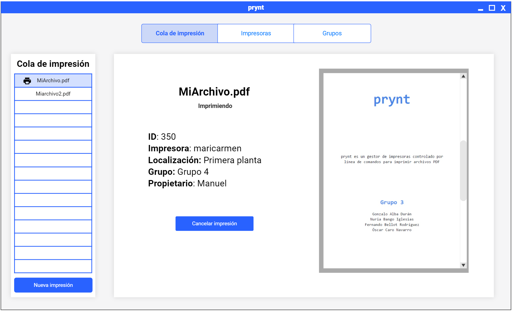
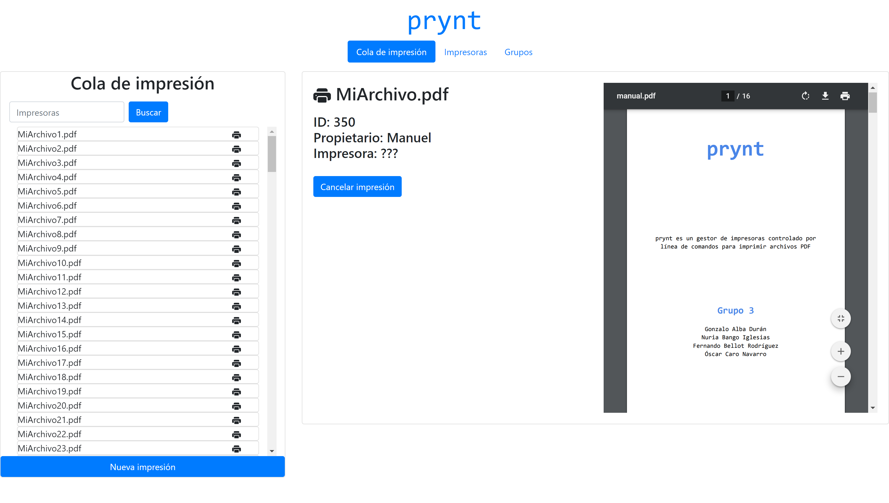
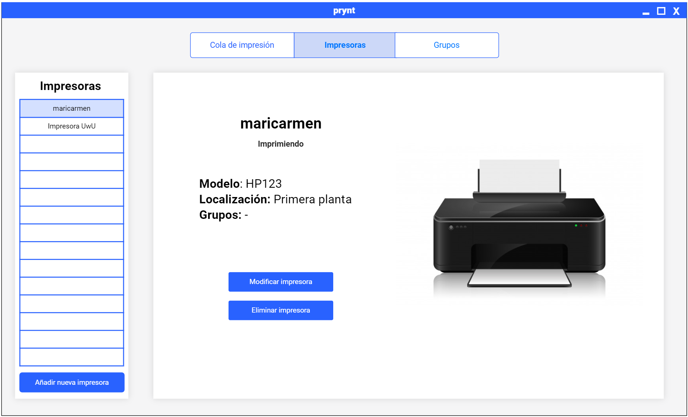
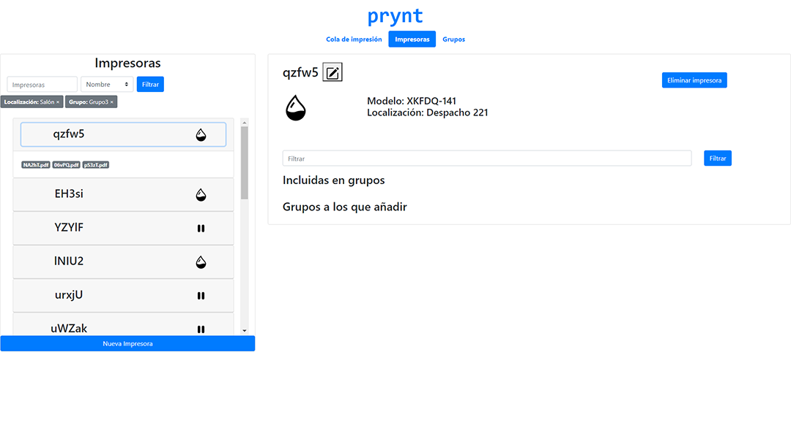
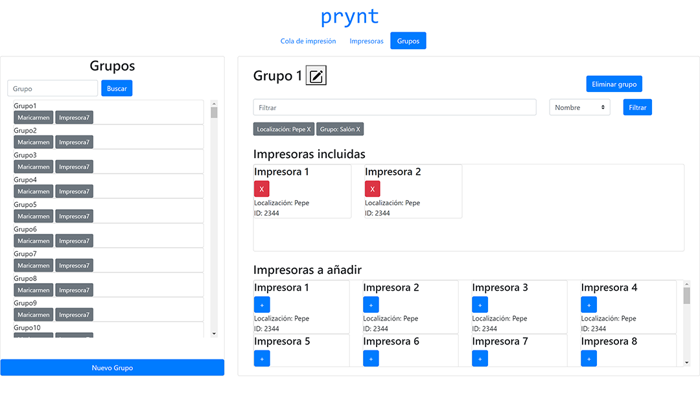
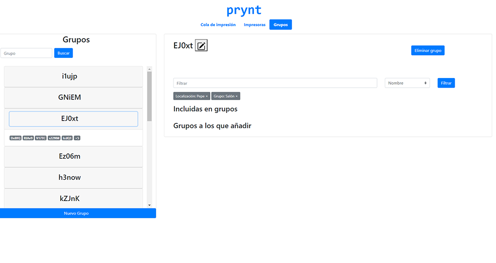
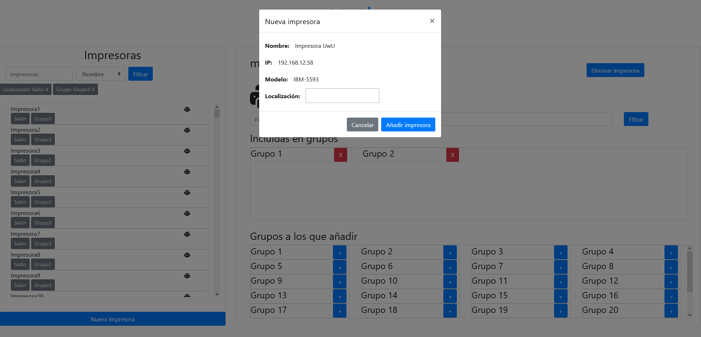

prynt
Cambios respecto a la anterior entrega
Respecto a la anterior entrega, hemos añadido muchas funcionalidades nuevas a nuestra aplicación. En general hemos rediseñado el panel izquierdo para poder mostrar
más información al usuario y también el panel derecho para añadir más funcionalidades, aprovechando mejor el espacio.
Cola de impresión
Ahora en el panel izquierdo podemos buscar por nombre los documentos que están imprimiendose y a la espera:
 
Diseño inicial Diseño final
Impresoras
En la nueva pestaña de Impresoras, en el panel izquierdo se pueden filtrar impresoras por todos sus parámetros. La lista de impresoras ahora tiene un símbolo a la derecha de cada elemento que indica el estado en el que se encuentra.
El contenido del panel derecho lo hemos rediseñado completamente para mostrar los grupos a los que pertenece la impresora y los grupos posibles a los que todavia no pertenece mediante dos paneles con los que se puede hacer scroll.
Podemos filtrar los grupos por el nombre para identificarlos rápidamente. Para añadir, editar o eliminar la impresora basta con pulsar el botón y se abrirá un diálogo emergente para añadir/cambiar los atributos o un mensaje de advertencia.
 
Diseño inicial Diseño final
Grupos
En la pestaña de Grupos, en el panel izquierdo se pueden buscar por nombre de grupo, además de ver varios grupos a los que pertenece.
Al igual que en la pestaña de impresoras, tenemos la opción de filtrar grupos además de ver la información de las impresoras y la posibilidad de añadir o eliminarlas del grupo.
 
Diseño inicial Diseño final
Diálogos emergentes
Por último, hemos añadido diálogos emergentes a todas las funcionalidades principales (añadir, editar y eliminar). En la primera entrega no los diseñamos
pero ahora sí y se encuentran implementados en la nueva interfaz

Ejemplo de diálogo emergente de añadir impresora